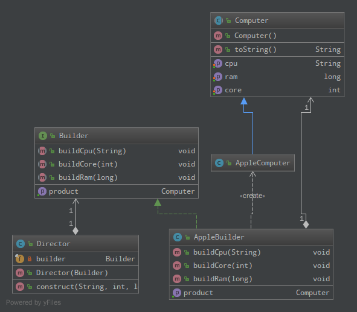

建造器模式
UML
将一个复杂对象的构建与它的表示分离，使得同样的构建过程可以创建不同的表示：

Java
- 编写Builder接口，它定义如何创建复杂对象的各个部件：
public interface Builder { void buildCpu(String cpu); void buildCore(int core); void buildRam(long ram); Computer getProduct(); }
- 用Director构建最后的复杂对象，Builder接口中封装的是如何创建一个个部件，而Director的内容是如何将部件最后组装成成品：
public class Director { private final Builder builder; public Director(Builder builder) { this.builder = builder; } public Computer construct(String cpu, int core, long ram) { builder.buildCpu(cpu); builder.buildCore(core); builder.buildRam(ram); return builder.getProduct(); } }
- 定义产品接口：
public abstract class Computer { private String cpu; private int core; private long ram; public Computer() { } public String getCpu() { return cpu; } public void setCpu(String cpu) { this.cpu = cpu; } public int getCore() { return core; } public void setCore(int core) { this.core = core; } public long getRam() { return ram; } public void setRam(long ram) { this.ram = ram; } @Override public String toString() { return "Computer{" + "cpu='" + cpu + '\'' + ", core=" + core + ", ram=" + ram + '}'; } }
- 实现具体的产品：
public class AppleComputer extends Computer { }
- Builder的具体实现：
- 通过具体完成接口Builder来构建或装配产品的部件
- 定义并明确它所要创建的是什么具体东西
- 提供一个可以重新获取产品的接口
public class AppleBuilder implements Builder { private Computer computer = new AppleComputer(); public void buildCpu(String cpu) { computer.setCpu(cpu); } public void buildCore(int core) { computer.setCore(core); } public void buildRam(long ram) { computer.setRam(ram); } public Computer getProduct() { return computer; } }
- 测试代码：
public class BuilderTest { public static void main(String[] args) { Director director = new Director(new AppleBuilder()); Computer computer = director.construct("intel", 4, 12800000L); System.out.println(computer); } }
测试结果：
Computer{cpu='intel', core=4, ram=12800000}
Scheme
无须创建n个product类，n个builder类，一个Director类，只需编写n个build函数
;;定义computer (define-structure (computer keyword-constructor copier) cpu core ram) ;; 定义存放build函数的hash table (define build-dict (make-hash-table)) ;; 根据类型返回对应的函数 (define build (lambda (type) (hash-table/get build-dict type '()))) ;;具体的build函数 (define apple-build (lambda (cpu core ram) (make-computer 'cpu cpu 'core core 'ram ram))) ;; 放入hashtable (hash-table/put! build-dict 'apple apple-build)
测试代码：
(let ((computer ((build 'apple) "intel" 4 1280000))) (begin (display "computer: cpu = ") (display (computer-cpu computer)) (display ", core = ") (display (computer-core computer)) (display ", ram = ") (display (computer-ram computer)) (newline) computer)) ;; => computer: cpu = intel, core = 4, ram = 1280000